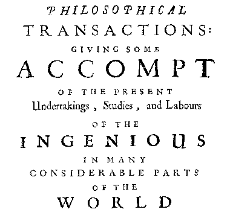

about
Title: About Us Date: 2010-01-01
We are a bunch of Physics Graduate students at Cornell. Our interests vary. Our aim is to share a bit of the fun of physics with the world.
A note on the name: The virtuosi was the original name for the members of the original Royal Society, they were a bunch of interested individuals who would meet twice monthly in London to discuss the topics of interest in the budding field of science. The Royal Society would go on to become the premier scientific institution in the coming years, but they had rather humble beginnings, one of their early meetings being dedicated to testing whether unicorn horn powder could deter spiders.
A note on the masthead: "Giving some account of the undertakings, studies, and labors of the ingenious in many considerable parts of the Cornell physics department." is a ripoff of the masthead for the original Royal Society publication Philosophical Transactions, whose masthead read: "Giving some account of the undertakings, studies, and labors of the ingenious in many considerable parts of the world." Seen below:

It is in this spirit that we aim to share some physics. Some of it silly, some of it serious, but all of it interesting.